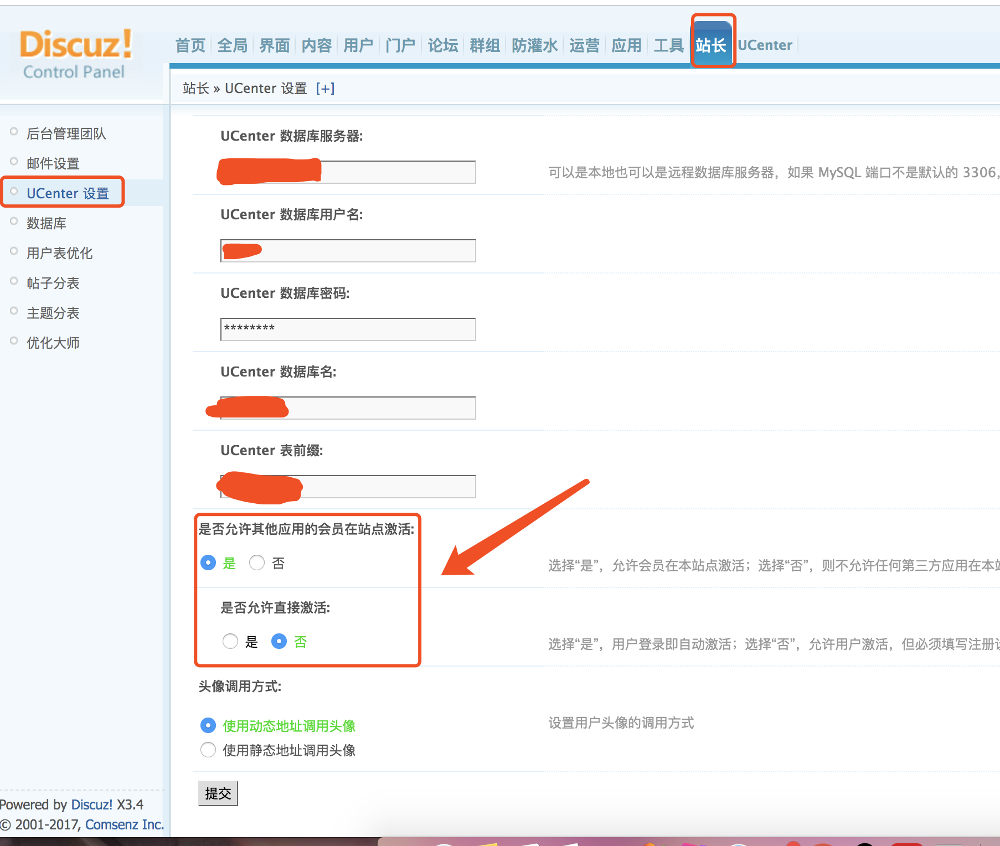

问题：dedecmsv5.7和discuz!X3.4整合之后，从dede过去的用户，第一次登陆discuz!X3.4，需要激活。后来我就上百度了一番，找到了一个方法
我找到的方法：
1.在dedecms项目下找到uc_client/model/user.php
2.搜索fadd_user这个方法，大概在106行，在return $uid;最后返回结果之前添加一下代码：
/**
* 二次开发
* 免激活的登录discuz
*/
$regip = empty($regip) ? $this->base->onlineip : $regip;
$this->db->query("INSERT INTO ".UC_DBNAME.".x_common_member SET uid='$uid', username='$username', password='$password', email='$email', adminid='0', groupid='10', regdate='".$this->base->time."', credits='0', timeoffset='9999'");
$this->db->query("INSERT INTO ".UC_DBNAME.".x_common_member_status SET uid='$uid', regip='$regip', lastip='$regip', lastvisit='".$this->base->time."', lastactivity='".$this->base->time."', lastpost='0', lastsendmail='0'");
$this->db->query("INSERT INTO ".UC_DBNAME.".x_common_member_profile SET uid='$uid'");
$this->db->query("INSERT INTO ".UC_DBNAME.".x_common_member_field_forum SET uid='$uid'");
$this->db->query("INSERT INTO ".UC_DBNAME.".x_common_member_field_home SET uid='$uid'");
$this->db->query("INSERT INTO ".UC_DBNAME.".x_common_member_count SET uid='$uid', extcredits1='0', extcredits2='0', extcredits3='0', extcredits4='0', extcredits5='0', extcredits6='0', extcredits7='0', extcredits8='0'");注：把x_common_member换成你们的数据表名（前缀可能不一样）
3.然后保存上传到服务器就可以了！
————————————————————————————————————————————————————————————————————————————————————
后来，某一天我又上网搜了一下，发现了一种更加简单的方法诶

但是我也经通过上面的方法整好了，所以，我就没测试一下这个功能是不是好使……
可以先试一下，站长这个设置好使么，如果不好使的话，再换最上面的方法……